62 slides / 147 decks
Regression evidence for the current implementation. This is not proof of PowerPoint or browser parity.
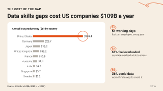
gallery/design-and-media/data-story-academy-corporate-programs.opf.json#2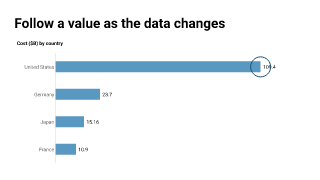
technical/chart-point-overlays.opf.json#0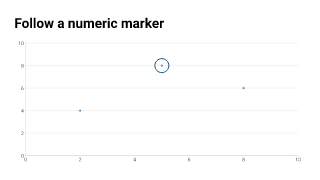
technical/chart-point-overlays.opf.json#1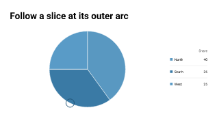
technical/chart-point-overlays.opf.json#2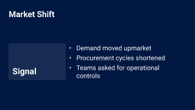
technical/columns.opf.json#0technical/columns.opf.json#1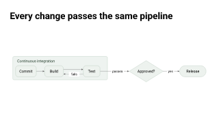
technical/dot-diagrams.opf.json#0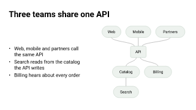
technical/dot-diagrams.opf.json#1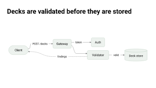
technical/dot-diagrams.opf.json#2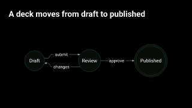
technical/dot-diagrams.opf.json#3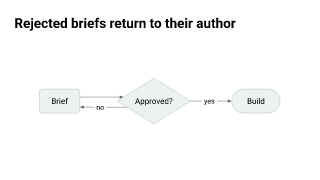
technical/dot-diagrams.opf.json#4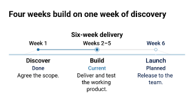
technical/duration-timeline.opf.json#0technical/dynamic-composition.opf.json#2technical/grid-spans.opf.json#0technical/grid-spans.opf.json#1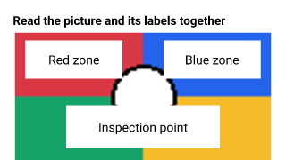
technical/image-callouts.opf.json#0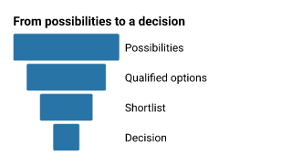
technical/inverted-pyramids.opf.json#0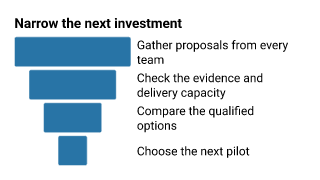
technical/inverted-pyramids.opf.json#1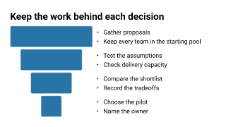
technical/inverted-pyramids.opf.json#2technical/layout-sampler.opf.json#0technical/layout-sampler.opf.json#1technical/layout-sampler.opf.json#2technical/layout-sampler.opf.json#3technical/layout-sampler.opf.json#4technical/layout-sampler.opf.json#5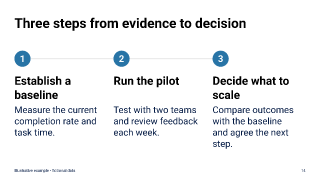
technical/layout-sampler.opf.json#13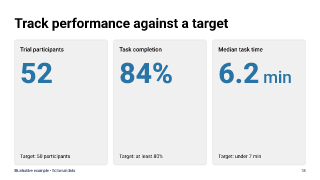
technical/layout-sampler.opf.json#17technical/layout-sampler.opf.json#36technical/layout-sampler.opf.json#42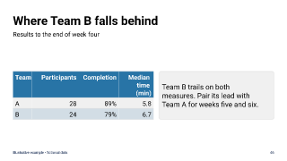
technical/layout-sampler.opf.json#45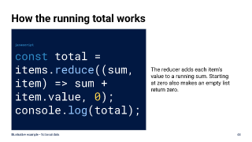
technical/layout-sampler.opf.json#47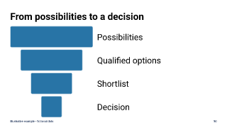
technical/layout-sampler.opf.json#49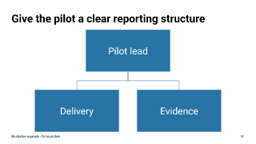
technical/layout-sampler.opf.json#50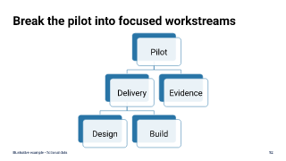
technical/layout-sampler.opf.json#51technical/layout-sampler.opf.json#52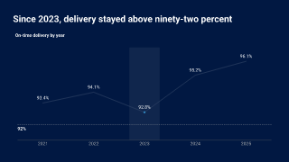
technical/localized-chart-references.opf.json#0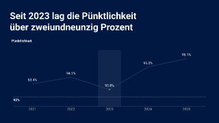
technical/localized-chart-references.opf.json#1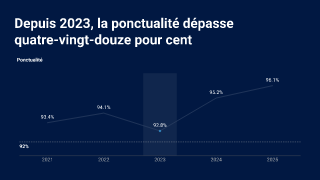
technical/localized-chart-references.opf.json#2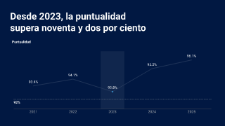
technical/localized-chart-references.opf.json#3 technical/localized-chart-references.opf.json#4
technical/localized-chart-references.opf.json#4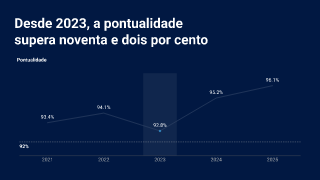
technical/localized-chart-references.opf.json#5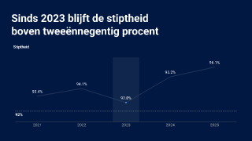
technical/localized-chart-references.opf.json#6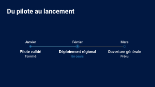
technical/localized-timeline.opf.json#0technical/multilingual-slides.opf.json#0technical/multilingual-slides.opf.json#1technical/multilingual-slides.opf.json#2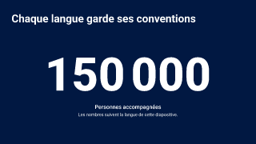
technical/multilingual-slides.opf.json#3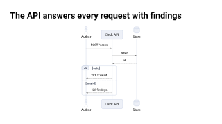
technical/plantuml-diagrams.opf.json#0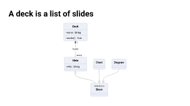
technical/plantuml-diagrams.opf.json#1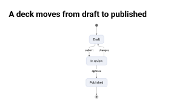
technical/plantuml-diagrams.opf.json#2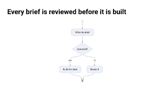
technical/plantuml-diagrams.opf.json#3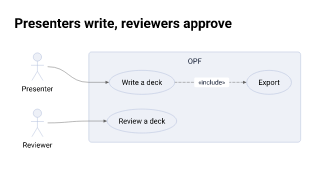
technical/plantuml-diagrams.opf.json#4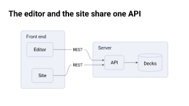
technical/plantuml-diagrams.opf.json#5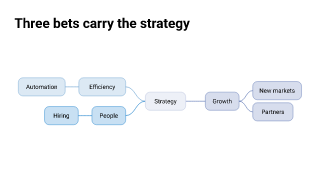
technical/plantuml-diagrams.opf.json#6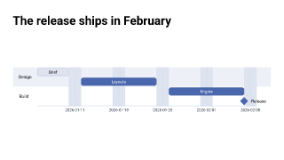
technical/plantuml-diagrams.opf.json#7technical/promoted-region-grid.opf.json#0technical/rows-chart.opf.json#1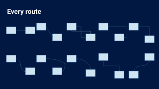
technical/shape-overlays.opf.json#4technical/slide-sections.opf.json#2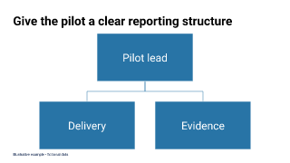
technical/trees-and-sets.opf.json#0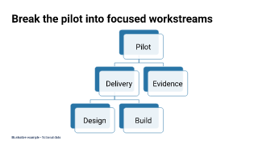
technical/trees-and-sets.opf.json#1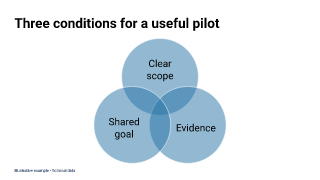
technical/trees-and-sets.opf.json#2